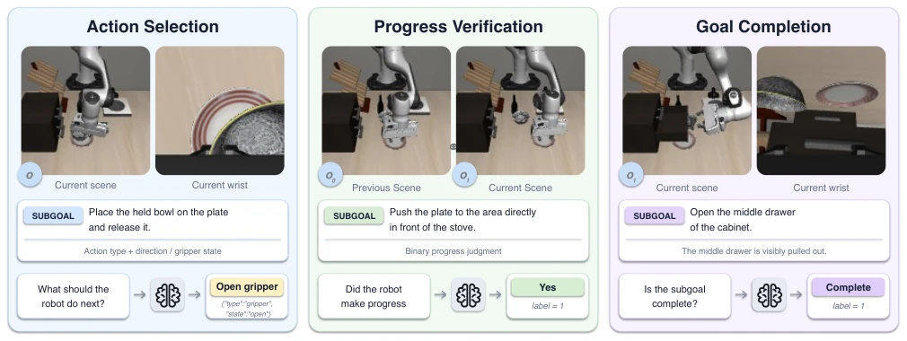
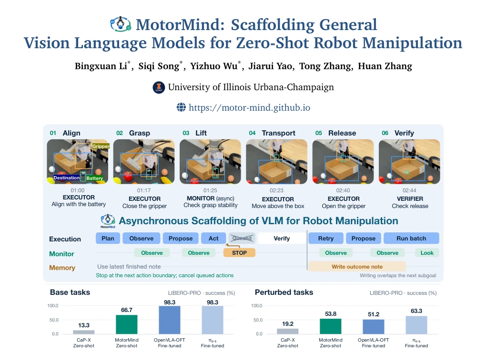
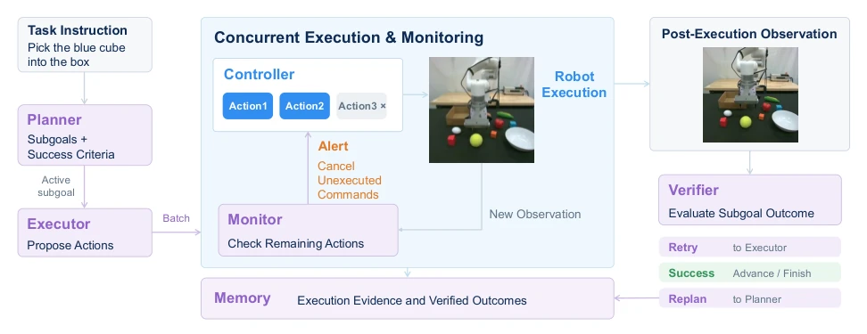
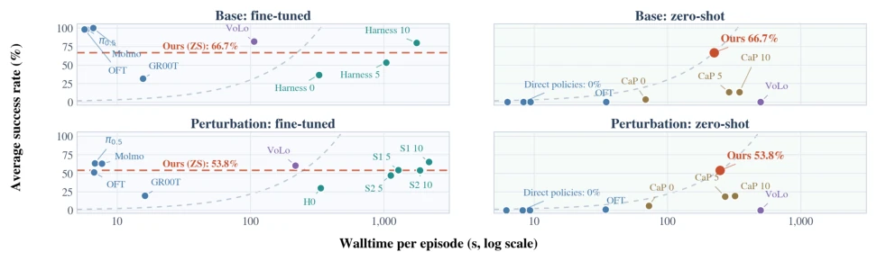
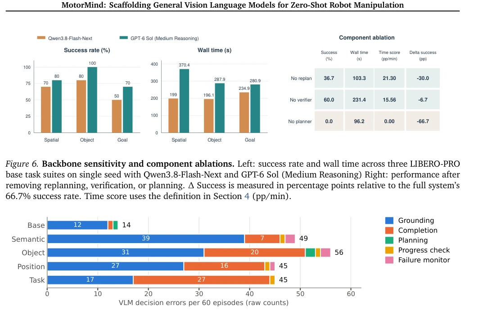
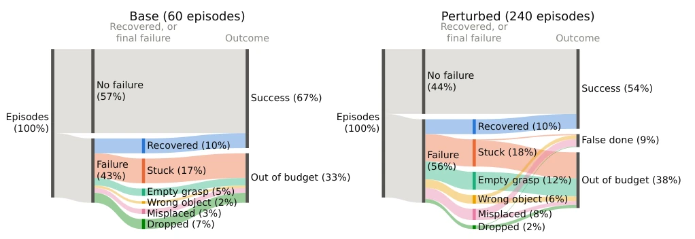
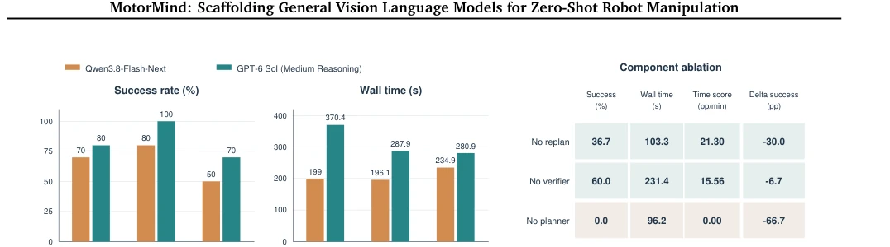

This paper attempts to use a general VLM directly as the robot "brain", without fine-tuning or external tools, focusing on a "zero-shot" direct challenge. Although the VLM performs averagely in action selection (Table 2), the authors devised a "mid-level action representation", translating abstract instructions into specific move, rotate, and grasp primitives, combined with asynchronous monitoring, achieving a 66.7% zero-shot success rate on LIBERO-PRO, significantly outperforming other zero-shot methods. However, it is not a panacea; visual localization errors and premature completion judgments remain the primary causes of failure. This is like asking a philosopher to operate an excavator; although occasionally getting lost, it is much more flexible than models that only memorize action libraries, proving that general models combined with appropriate abstraction layers can indeed work, though not yet to the level of full autonomy. Its asynchronous monitoring mechanism is a highlight, capable of cutting losses timely during physical execution, but it relies on the VLM's own reasoning ability; if the model weakens, system performance will also decline.
研究动机Motivation
现有 VLA 模型（如 Kim et al., 2025b）依赖特定任务数据，泛化性差，难以适应新环境。Agentic 系统（如 Lu et al., 2026）又依赖太多外部工具（SAM、代码代理），复杂且昂贵。核心问题是：能否仅靠通用 VLM 像人类遥操作者一样，直接基于观察推理并适应反馈？诊断实验显示 VLM 在动作选择上准确率最低（Table 2），这暴露了直接端到端控制的缺陷，因此需要一种能修正执行偏差的架构，而非单纯依赖外部规划器。这不仅是技术路线之争，更是如何低成本利用大模型智能的关键。当前 VLA 模型在零样本场景下表现不佳，而现有 Agent 方法又过于复杂，MotorMind 试图在两者之间找到平衡点，验证通用 VLM 的潜力。
Existing VLA models (e.g., Kim et al., 2025b) rely on task-specific data, have poor generalization, and struggle to adapt to new environments. Agentic systems (e.g., Lu et al., 2026) rely on too many external tools (SAM, code agents), making them complex and expensive. The core question is: Can a general VLM alone, like a human teleoperator, reason directly based on observations and adapt to feedback? Diagnostic experiments show VLM accuracy is lowest in action selection (Table 2), exposing the flaws of direct end-to-end control; thus, an architecture capable of correcting execution bias is needed, rather than solely relying on external planners. This is not just a debate on technical routes, but key to how to utilize large model intelligence at low cost. Current VLA models perform poorly in zero-shot scenarios, while existing Agent methods are too complex; MotorMind attempts to find a balance between the two, verifying the potential of general VLMs.

Figure 2. Diagnosing VLM capabilities for robotic manipulation. We evaluate action selection, progress assessment, and subgoal completion.
The core is "mid-level action representation" and "asynchronous scheduling". The VLM does not output joint commands, but outputs parameterized move/rotate/gripper primitives, which are converted to physical motion by the Controller. The architecture includes five roles: Planner decomposes sub-goals, Executor proposes actions, Monitor asynchronously checks anomalies and interrupts, Verifier validates results, Memory records history. The key innovation lies in Monitor and Memory not blocking the main loop, allowing pending commands to be cancelled at action boundaries, achieving observation-driven error correction. This design allows the VLM to focus on semantic decision-making, while physical details are handed to a deterministic controller, balancing flexibility and safety, enabling the same interface to adapt to different robot embodiments. Specifically, the Executor returns a structured proposal containing evaluation, completion signals, and action batches; the Controller validates and executes; the Monitor continuously checks scene consistency in a background thread, requesting cancellation upon detecting errors (e.g., grasping the wrong object). The Verifier combines measured states and model judgment to confirm whether sub-goals are completed, deciding whether to retry or proceed. Memory asynchronously generates execution evidence summaries for subsequent planning, ensuring the coherence of the decision chain. This modular design avoids the complexity of a single model handling all tasks, improving system robustness.

Figure 1. MotorMind: Equipping general-purpose vision-language models into robot controller. VLM proposes mid-level actions (e.g. "move forward by 12.20mm"), then pass to the control layer that connects those decisions to physical execution and feedback. Asynchronous monitoring enables interruption of pending actions, and outcome verification guides recovery and replanning. This design supports zero-shot manipulation across simulation and real-world settings without task-specific training.

Figure 3. Overview of MotorMind. The Planner specifies subgoals and success criteria. The Executor proposes short action batches, which the Controller converts into robot motion. During execution, the Monitor evaluates updated observations and can request interruption at an action boundary, cancelling pending commands. Outcome assessment then determines whether to advance, retry, or replan. Memory summarizes execution evidence and assessed outcomes in the background for subsequent decisions.
Tested on LIBERO-PRO, zero-shot base task success rate 66.7%, 53.8% under perturbation, outperforming baselines like CaP-X, even approaching fine-tuned OpenVLA-OFT. Real xArm6 robot deployment achieved 95% success rate. Ablation experiments show removing Planner causes success rate to drop to zero, proving planning is crucial. Replacing with a stronger VLM backbone (GPT-6 Sol) can further improve performance, indicating the bottleneck lies in model capability rather than architecture. Failure analysis indicates visual localization and completion judgment are main shortcomings, which can be improved in the future with VLM capability enhancement. This proves the potential of zero-shot strategies, but also reveals current limitations in VLM physical understanding. Experiments also demonstrated adaptability in dynamic scenes (e.g., conveyor belts), further validating system robustness.

Figure 4. Success rate versus episode wall time. The four panels separate base and perturbation evaluations and distinguish methods with fine-tuned policies from zero-shot methods. Orange points denote MotorMind; orange horizontal lines show its success rate for reference in the fine-tuned panels. Gray dashed curves indicate the same time-normalized success score as MotorMind.

Figure 7. Failure analysis of VLM decision errors across LIBERO-PRO settings.

Figure 8. Physical failure analysis tracing MotorMind episodes through failures, recovery, and outcomes on unper- turbed (left) and perturbed (right) LIBERO-PRO tasks. Each failed episode is assigned its last unrecovered failure; Recovered episodes had failures and recovered from all of them. False done: the model declared the task complete while its goal predicate was false. Band thickness is proportional to the share of episodes within each panel.
其他图片Other Figures

Figure 6. Backbone sensitivity and component ablations. Left: success rate and wall time across three LIBERO-PRO base task suites on single seed with Qwen3.8-Flash-Next and GPT-6 Sol (Medium Reasoning) Right: performance after removing replanning, verification, or planning. ∆Success is measured in percentage points relative to the full system’s 66.7% success rate. Time score uses the definition in Section 4 (pp/min).